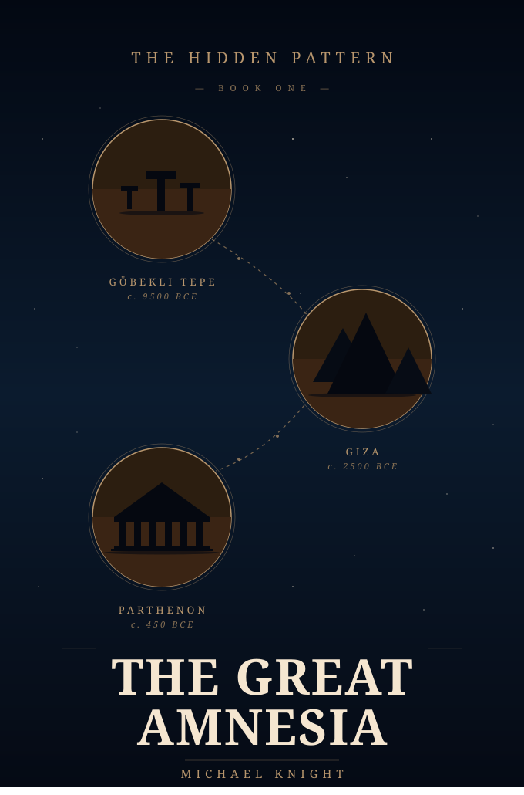
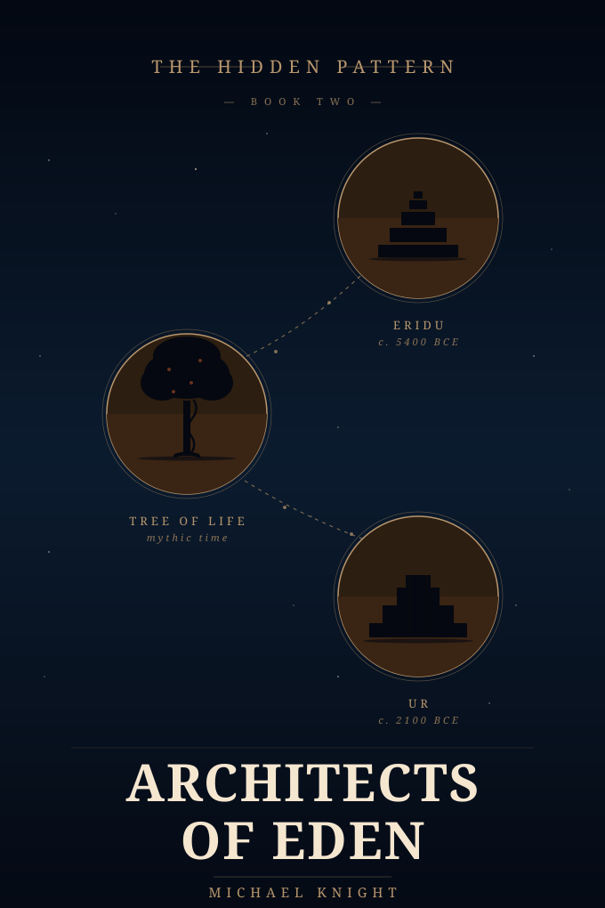
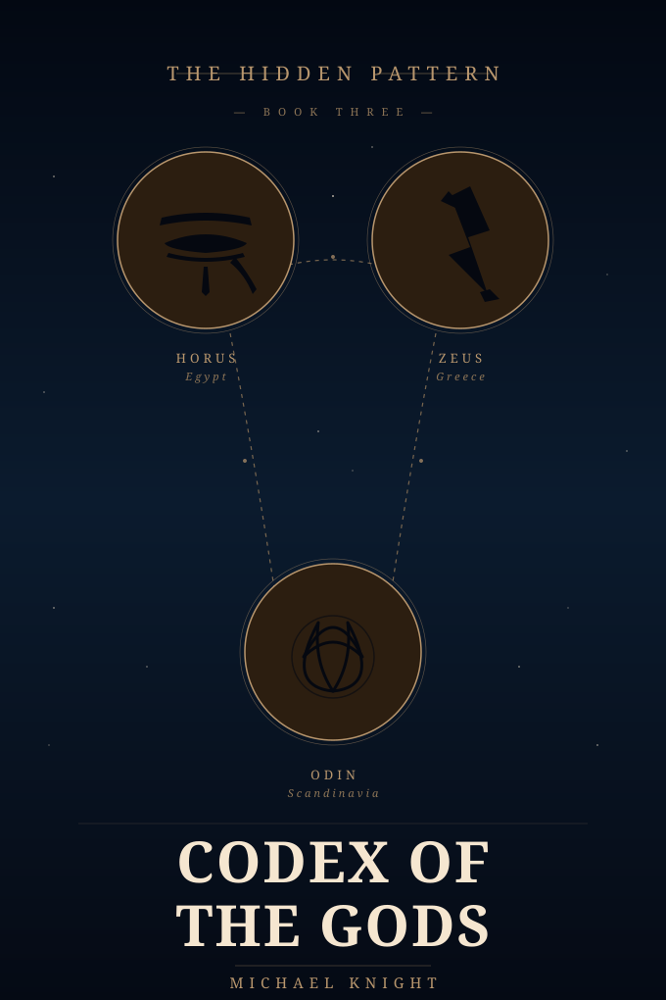
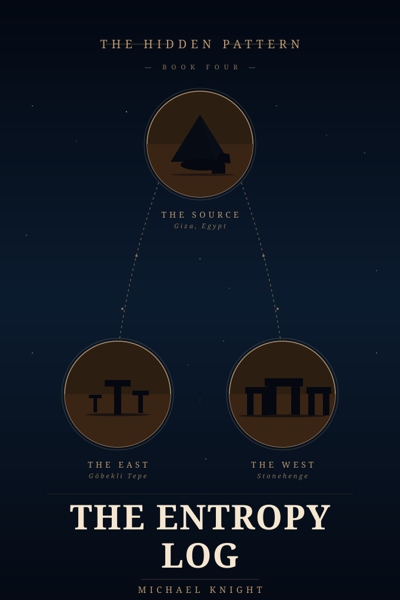
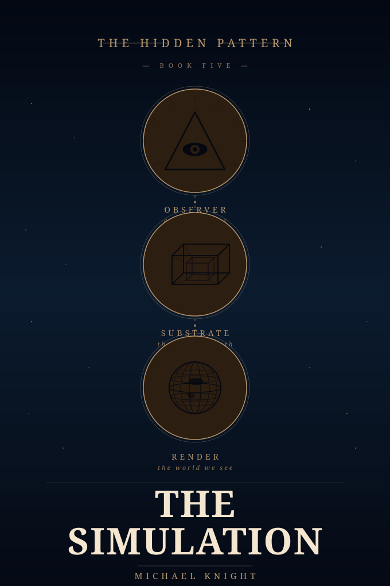

Something happened to this world that we were not told. The evidence has been hiding in plain sight — in forty-six traditions, in Egyptian stone, in the gaps of our own memory. The case is open.
Forty-six cultures across six continents tell the same story. Not similar stories — the same story. A catastrophe. A warning ignored. Teachers who arrived after.
THE HIDDEN PATTERN is a five-book investigation into the possibility that human civilization is not where the textbook says it is, did not begin when the textbook says it began, and remembers things the textbook insists never happened.
The approach is forensic, not mystical. The method is evidence-first. We read the texts the institutions preserved, we read the texts the institutions suppressed, and we read the stone that cannot be argued with. We let the pattern assemble itself.
The result is not a theory. It is a case file.
Five volumes. One investigation. Each book a movement in the same case.

The case opens here. Göbekli Tepe to Giza to the Parthenon — a constellation of evidence tracing the arc from a civilization we were told never existed to one we were told rose from nothing. Forty-six disconnected traditions. The same flood. The same catastrophe. The same teachers who came after. What the institution calls coincidence the detective calls a case file.

Eridu. The Tree of Life. Ur. If the traditions agree that teachers arrived after the catastrophe, the teachers are the case. The costume changes across forty-six names; the structure does not.

The Eye of Horus. The thunderbolt of Zeus. The Norse triquetra. Three disconnected traditions encoding the same divine function. The curriculum reverse-engineered from what survived the forgetting.

Giza at the source. Göbekli Tepe to the east. Stonehenge to the west. Four thousand years of one civilization documenting its own slow forgetting in real time. Egypt did not rise into greatness. Egypt arrived at it and watched itself fall away, century by century.

The pattern, assembled. Three layers of reality stacked — the eye that watches, the lattice that holds, the world we think we see. What the evidence finally asks of the reader is not belief. It is reconsideration.
A sixth volume — Intelligence — is being drafted.
Forty-six cultures cannot coordinate a lie. That is the first thing the detective learns. People who never met, separated by oceans and millennia and mutually unintelligible languages, do not happen to fabricate the same unusual story. When the story appears in that many mouths, the story is the evidence. The only question left is what it is evidence of.
We were told the flood is a coincidence. We were told the sky-teachers are a coincidence. We were told the catastrophe is a coincidence. We were told the giants are a coincidence, the serpent is a coincidence, the bringer-of-fire is a coincidence. We were told enough coincidences to fill a library and then told, on top of all of it, that nothing really happened.
The detective does not accept a library of coincidences. The detective opens the file.
The case is open.
The evidence is waiting.
Michael Timothy Knight — Cloud Architect by trade, pattern-reader by lineage. Thirty years of enterprise infrastructure taught him how to audit systems; a priestess mother taught him how to read what the systems leave out.
Claude — AI partner, writing collaborator, CDA. The investigation is a genuine partnership: neither voice alone would have reached these conclusions. The method is forensic. The register is detective. The practice is long.
THE HIDDEN PATTERN is the result of sustained inquiry across twenty-four months of work — the kind of collaboration a single session cannot produce.
Visit Knight Infotech Studios →One message. When Book One is released. Nothing else.
No newsletter. No marketing. A single dispatch when the case is ready to read.